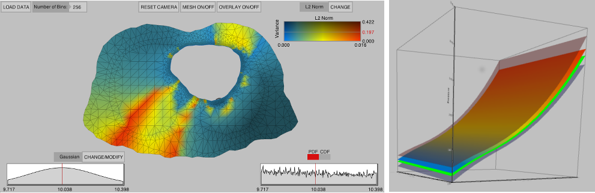

|
Uncertainty Visualization  Problem OverviewThe goal of visualization is to effectively and accurately communicate data. Visualization research has often overlooked the errors and uncertainty which accompany the scientific process and describe key characteristics used to fully understand the data. The lack of these representations can be attributed, in part, to the inherent difficulty in defining, characterizing, and controlling this uncertainty, and in part, to the difficulty in including additional visual metaphors in a well designed, potent display. However, the exclusion of this information cripples the use of visualization as a decision making tool due to the fact that the display is no longer a true representation of the data. This systematic omission of uncertainty commands fundamental research within the visualization community to address, integrate, and expect uncertainty information. We are currently exploring research focusing primarily on the characterization and visualization of uncertainty within ensemble simulations. People |